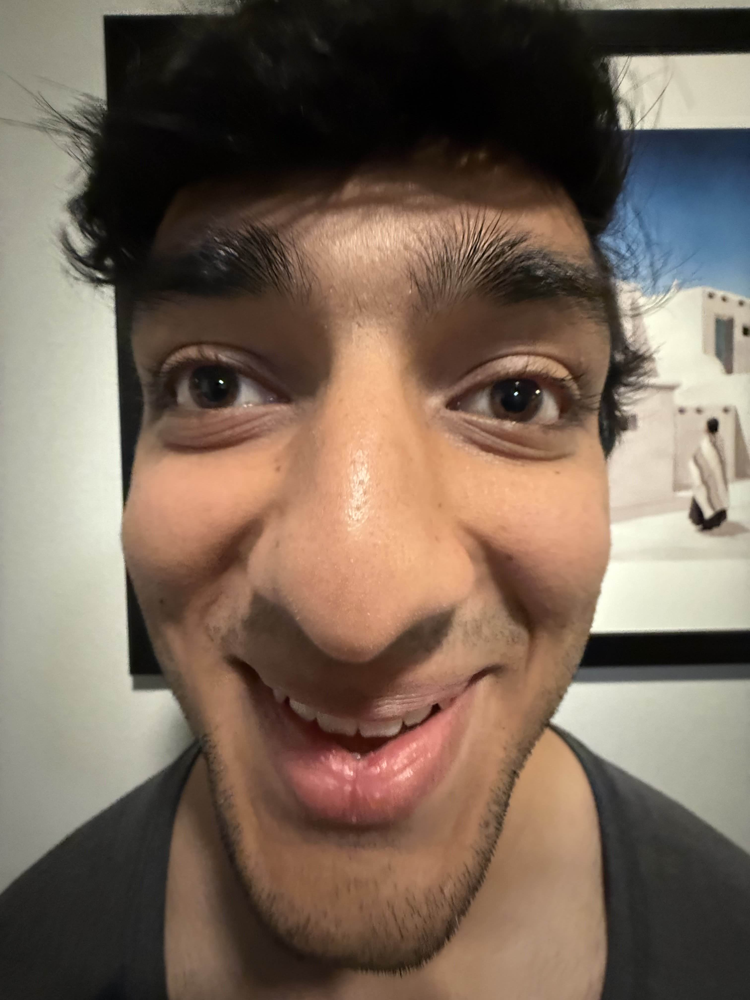
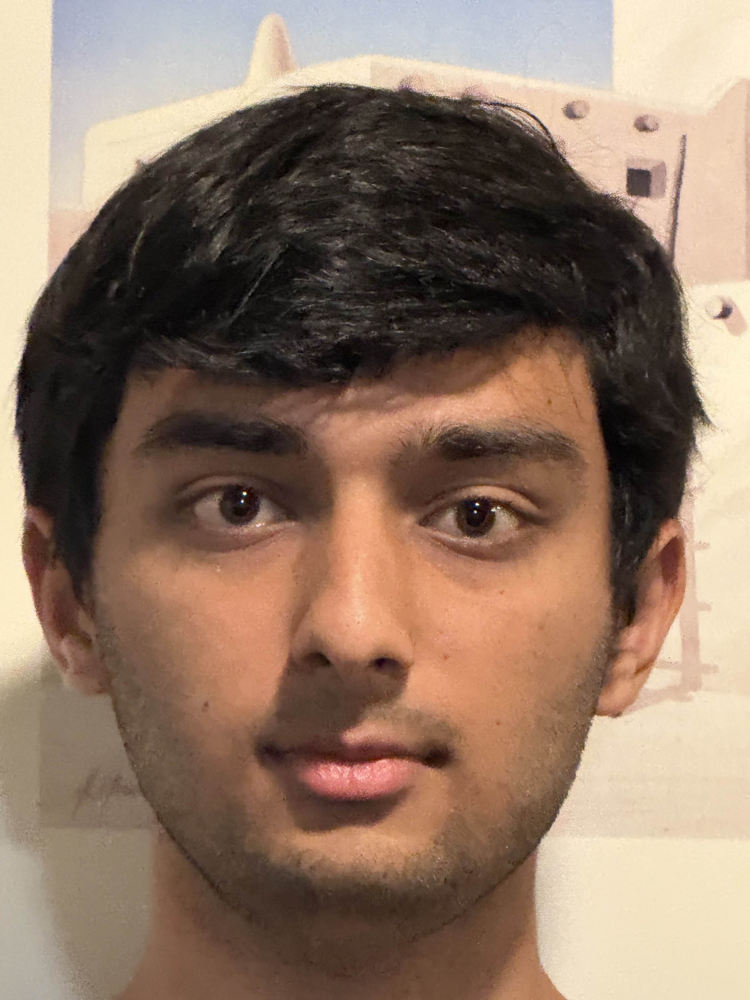
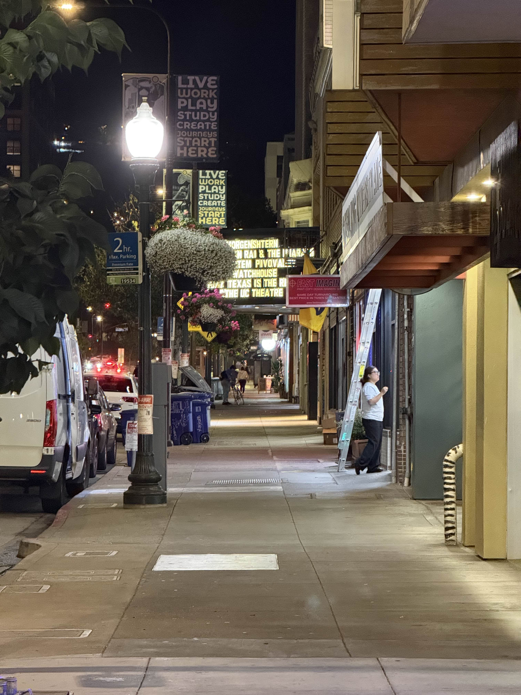
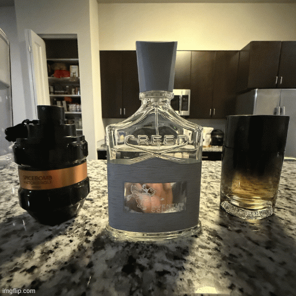

Becoming friends with your camera
Exploring perspective, focal length, and the center of projection through three small experiments: portrait perspective, architectural compression, and a classic dolly zoom.
Overview
This was a really cool project as it gave me a better grasp of the way my camera works and the relationship between zoom, perspective, and focal length in photography. The three parts below show the results of my work.
Part 1. Portrait perspective: close versus step back and zoom
First, I shot a close portrait of my roommate Jai, who kindly volunteered to be my guinea pig in this experiment. I then stepped back several feet and used zoom to match the framing. Notice how facial proportions look more natural when I keep the framing but change the camera position.


Observation: geeked vs. locked in. Keeping the face the same size in the frame while changing distance alters perspective, meaning the relative sizes of near and far features.
Part 2. Architectural perspective compression
I photographed a receding scene two ways: (A) from a distance with more zoom, and (B) from closer with no zoom, keeping the overall framing similar.


Part 3. The dolly zoom
I created a dolly zoom by moving the camera backward while simultaneously zooming in, keeping the subject roughly the same size across frames. The changing perspective against a stable subject produces a cinematic push-pull effect.

Thanks for checking out my project!